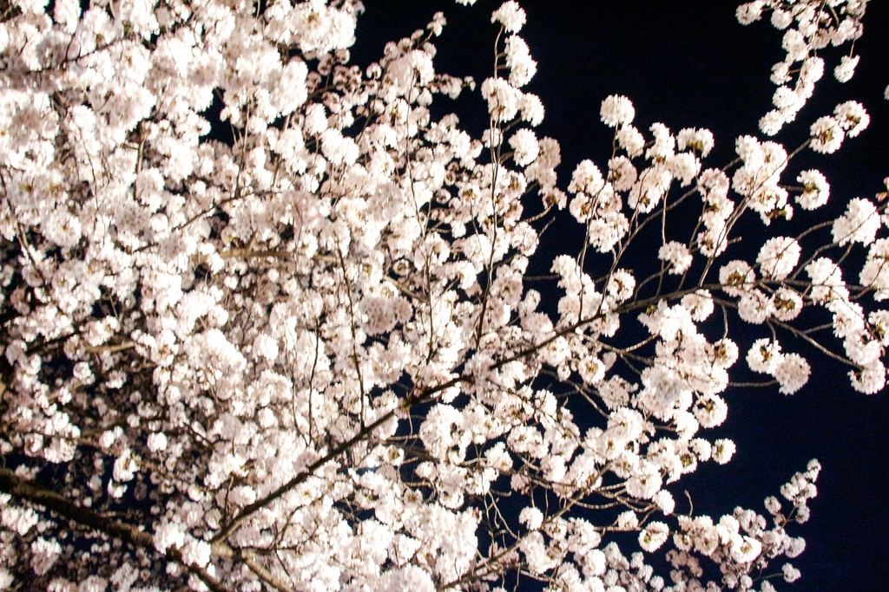
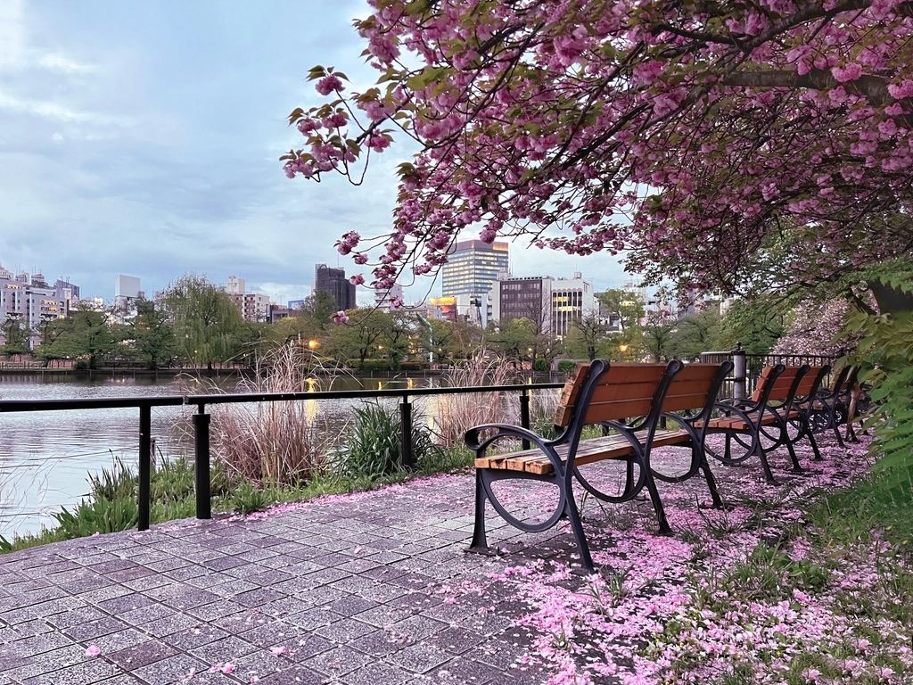

Tahun 2027 tersusun indah untuk pengembara Muslim: Hari Raya Aidilfitri dijangka sekitar 9 Mac, dan bunga sakura Tokyo biasanya mula berkembang pada penghujung Mac dan mencapai kemuncak sekitar awal April. Bagi keluarga di Malaysia dan Indonesia, ini meletakkan musim sakura 2027 dalam jangkauan cuti sekolah sempena Raya — percutian sambutan yang berakhir di bawah bunga sakura. Inilah cara merancangnya.
| Bila (2027) | Apa yang berlaku |
|---|---|
| ~8 Feb – 8 Mac | Ramadan 1448H (di Tokyo: puasa singkat ~12.5 jam — lihat panduan Ramadan di Tokyo kami) |
| ~9 Mac | Hari Raya Aidilfitri (tertakluk kepada rukyah anak bulan, ±1 hari) |
| Pertengahan–akhir Mac | Bunga plum berakhir; sakura varieti awal (kawazu-zakura) sudah berkembang di sesetengah tempat |
| ~20–28 Mac | Sakura utama Tokyo (somei-yoshino) biasanya mula berkembang — pada tahun-tahun panas kebelakangan ini, lebih awal |
| ~Akhir Mac – 5 Apr | Tempoh kemuncak berbunga penuh pada tahun biasa, diikuti seminggu kelopak berguguran (hanafubuki — bahagian kegemaran ramai orang) |
Peringatan jujur: tarikh sakura berubah setiap tahun mengikut cuaca, dan tiada siapa dapat menjanjikan bunga penuh berkembang pada tarikh anda. Japan Meteorological Corporation menerbitkan ramalan berkala mulai Januari; semaklah sebelum mengunci tiket penerbangan, dan jika terpaksa memilih tanpa panduan, minggu terakhir Mac hingga hari-hari awal April ialah tempoh yang paling selamat dari segi statistik untuk Tokyo.
Jika perjalanan anda bermula pada hari Raya itu sendiri: masjid-masjid di Tokyo mengadakan solat sunat Aidilfitri yang meriah pada waktu pagi, dengan Tokyo Camii (masjid terbesar di Jepun) yang paling besar dan paling meriah sambutannya — datang awal, berpakaian tebal, dan bersedialah untuk jemaah dari segenap pelosok dunia Islam. Masjid kejiranan kami, Masjid Darul Arqam di Asakusa, menawarkan sambutan Raya komuniti yang lebih kecil dan lebih mesra, dalam jarak berjalan kaki dari vila kami. Bunga plum masih berkembang pada awal Mac — gambar Raya sekeluarga di bawah bunga tetap menjadi walaupun sebelum sakura berkembang.

Taman di tebing sungai antara Asakusa dan Mukojima — beratus-ratus pokok sakura di kedua-dua tebing Sungai Sumida, dengan Tokyo Skytree menjulang di belakangnya. Inilah gambar sakura Tokyo yang paling klasik, dan ia halaman rumah kami sendiri: anda boleh berjalan pulang ke vila selepas itu. Ada pencahayaan malam pada kebanyakan tahun; bot yakatabune meluncur di bawah bunga.
Lebih seribu pokok dan kerumunan hanami paling meriah dan paling ceria di seluruh bandar. Pergilah pada pagi hari bekerja jika bersama anak-anak; gabungkan dengan muzium atau zoo. Kedai barangan halal di Ameyoko dan Masjid As-Salaam hanya beberapa minit jauhnya untuk solat Zohor.
Kelopak berguguran ke atas parit istana, bot dayung di bawah bunga. Barisan menunggu bot memang panjang — pergilah sebaik sahaja dibuka. Logistik solat terdekat: tunaikan Zohor sebelum bertolak, atau rancang Asar setelah kembali ke vila.
Terowong bunga sepanjang empat kilometer di atas terusan, paling indah apabila diterangi lampu selepas gelap. Sesak tetapi tidak dapat dilupakan; gabungkan dengan hari di Shibuya.
Hanami, pada dasarnya, ialah piknik di bawah pokok — dan di sinilah menginap di tempat yang mempunyai dapur halal sepenuhnya mengubah keseluruhan perjalanan. Makanan jalanan di pesta sakura kebanyakannya tidak boleh dimakan (yakitori bersalut mirin, cucuk daging babi, kuah yang tidak jelas), dan barisan restoran di bawah bunga sangat panjang. Tetamu kami melakukannya dengan cara berbeza:
Akhir Mac hingga awal April ialah tempoh penginapan paling mahal dan paling penuh ditempah di Tokyo. Rumah penuh untuk 8–10 tetamu memang jarang ada di Tokyo pada bila-bila masa pun; pada musim sakura, yang segelintir itu habis dahulu, biasanya 4–6 bulan lebih awal. Jika keluarga anda merancang Raya + sakura 2027, tempoh tempahan yang realistik ialah Oktober–Disember 2026. Ini terpakai untuk setiap vila di bandar ini, bukan vila kami sahaja — tempahlah mana-mana pilihan anda seawal mungkin, dan semak terma pembatalan supaya tarikh Raya yang beranjak atau ramalan bunga yang lewat tidak memerangkap anda.
THE HOSPITEL by Dr. — vila persendirian mesra Muslim untuk sehingga 10 tetamu, 20 minit berjalan kaki dari pokok-pokok sakura Taman Sumida. Dua bilik solat, dapur halal sepenuhnya untuk bento hanami, reka bentuk tidur yang disusun oleh doktor. Satu kumpulan sahaja setiap malam.
Semak kekosongan 2027